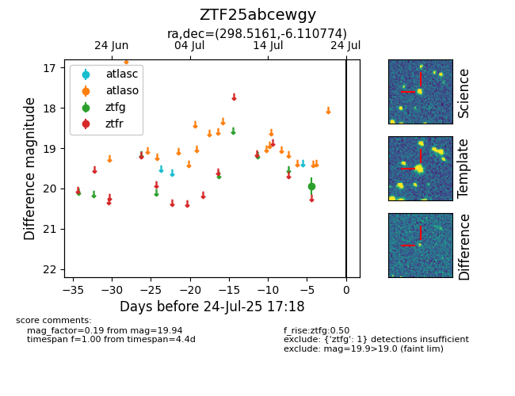

Target ZTF25abcewgy at 2025-07-24 17:18, see:
FINK: fink-portal.org/ZTF25abcewgy
Lasair: lasair-ztf.lsst.ac.uk/objects/ZTF25abcewgy
ALeRCE: alerce.online/object/ZTF25abcewgy
alt names
ZTF25abcewgy (ztf,fink)
coordinates:
equatorial (ra, dec) = (298.5161,-6.11077)
galactic (l, b) = (34.5842,-16.69985)
photometry
last ztfg=19.94
1 ztfg detections
